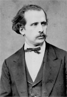
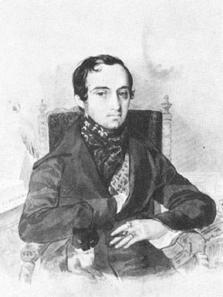
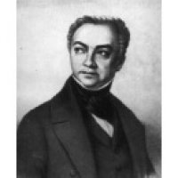
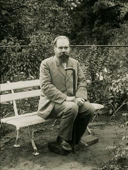
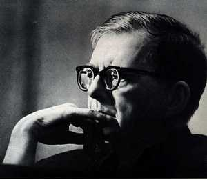

История развития фондов библиотеки, особенно периода её создания и последующих десятилетий - это история дарений, «вливаний» коллекций из других библиотек, а иногда и целых библиотек. К сожалению, большинство даров за многие годы растворилось в общих фондах, и только читатель, открыв необходимое издание, увидит подпись или экслибрис владельца. Есть несколько принципов, которые регламентируют комплектование библиотеки мемориальными коллекциями. Библиотека собирает и пополняет фонд: рукописями и изданиями для восполнения исторически сложившихся коллекций; личными архивами и библиотеками выпускников и преподавателей консерватории, круг которых определяется значительностью их вклада в развитие музыкального искусства либо содержательной ценностью дара; рукописями и редкими изданиями документов и коллекций лиц, творчество, деятельность которых стали заметным событием в национальной и мировой музыкальной культуре или дар которых представляет особую ценность.
Коллекции подаренные библиотеке московской консерватории являются украшением любой библиотеки. За каждой из них стоит личность владельца, его профессиональные интересы и индивидуальные пристрастия.  Ведушая роль в формировании библиотеки принадлежала Н.Г.Рубинштейну.
Но самым крупным был дар княгини О.С. Одоевской, вдовы князя В.Ф. Одоевского, одного из учредителей РМО, до последних дней жизни принимавшего горячее участие в жизни консерватории. В своём письме на имя председателя дирекции Московского отделения РМО Н.П. Трубецкого она писала: 
"М. Г. князь Николай Петрович! Воспоминания о глубоком сочувствии, с которым приветствовал покойный мой муж первоначальную мысль об учреждении в Москве консерватории, а также о постоянных, до последних дней жизни, заботах его на пользу и успех этого учреждения, естественно возбудили во мне желание почтить память супруга на поприще научно-музыкальной его деятельности пожертвованием в полную собственность консерватории того отдела его библиотеки, в котором хранятся творения заветных его представителей музыкального мира. С этою целию я поручила лицу мне близкому составить подробную опись как этим собраниям нот и книг, так равно и разным музыкальным и акустическим его инструментам, приносимым мною в дар консерватории совокупно с поименованною коллекцией нот и книг...
Оставляю за собою твёрдое убеждение, что консерватория не забудет имени покойного моего мужа, который столь заботливо её любил и видел в ней верный залог преуспеяния музыкального искусства на русской почве. Покорнейше прошу вас, милостивый государь, принять уверение в полном моём к вам уважении. Кн. О. Одоевская» (Москва, 23-го марта 1869 г. ЦИТ по: Медведева ми. С. 6-7)
В коллекцию библиотеки Московской консерватории входила и библиотека А.Н. Верстовского, которую он "завещал" Русскому музыкальному обществу в Москве. 
Войдя в состав дирекции Русского музыкального общества в 1875 году, он стал передавать безвозмездно консерваторской библиотеке все свои педагогические издания - и ноты, и книги. В 1888 г. «в консерваторию поступило пожертвование от Марии Александровны Демской - нотная коллекция умершего в 1884 году отца её, Александра Яковлевича Скарятина, бывшего секретарём русского посольства при папском дворе. Эта коллекция включала в себя музыкальные сочинения композиторов 16, 17 и 18-го столетий ... переписанных по заказу А.Я.Скарятина. Сочинения были переписаны аббатом Фортунато Сантини, итальянским музыкальным коллекционером и композитором.
В 1910 году ядром фонда музыкально-теоретической библиотеки стал дар С.И. Танеева - около 100 книг и рукописей. Пожертвовал Танеев и два каталожных шкафчика американской системы.  Среди поступлений в библиотеку были пожертвования и от Российского музыкального издательства, также грандиозный дар издательства П.И. Юргенсона - почти все издания, 4600 экз. нот. И несколько книг.
Позже в 1919 году воистину бесценным оказалось получение большей части личной библиотеки С.И. Танеева в количестве 3 882 экз. Вот перечень некоторых изданий, сохранивших для нас следы работы с ними (пометки) С.И. Танеева: Aпdre А. Lehrbuch der Tonsetzkunst ... (Offenbach: а м. Andre, 1838).; BachJahrbuch, 1904 (Leipzig: Breitkopf & Hartel); Bussler L. Musikalische Formenlehre in 33 Aufgaben (Berlin: С. Habel, 1878); Haber! J. Beitrage zur Lehre уоп der musikаlisсhеп Komposition. Die Lehre уоп dem einfachen Kontrapunkt (Leipzig: Breitkopf & Hartel, 1899); Ирмологий нотного пения (1862); Вагнер Р. Опера и драма / Пер. А. Шепелевского и А. Винтера (м.: Юргенсон, 1906); Геварт А.Ф. Руководство к инструментовке / Пер. П.И. Чайковского.
Советский период
В 1934 г. библиотеке консерватории были переданы нотные фонды библиотеки Академии Наук СССР. В её состав влилась ещё одна музыкальная библиотека.
Фонд музыкального отдела библиотеки Академии Наук (БАН) поступил в распоряжение консерватории бесплатно. Это крупное поступление насчитывало 16046 экз., из них 804 клавира, 223 партитуры, 1 327 экз. духовнопевческой литературы и многое другое. Среди переданного было много библиографических редкостей.

1966 год. Среди наиболее значимых назовём переданные в дар библиотеке личные коллекции композитора Д.Б. Кабалевского, музыковеда Г.А. Поляновского (4000 ед. хран.), уникальную коллекцию книг и статей об альте В.В. Борисовского. Среди них переданные в дар библиотеке ноты всемирно известного издательства «Петерс» (ГДР), экспонировавшиеся на выставке в Москве.
Союзы композиторов, высшие музыкальные учебные заведения стран Восточной Европы, многие учреждения мира на протяжении 1960-1990-х гг. постоянно присылали в дар библиотеке ноты современных композиторов своих стран, благодаря чему в фонде они оказались представлены с достаточной полнотой. Скажем, произведения финских композиторов были переданы в дар НМБТ Финским музыкальным центром. Это дало читателю возможность библиотеки познакомиться с панорамой музыкальной Финляндии.
Среди многочисленных даров необходимо отметить ценный дар крупнейших музыкальных фирм ФРГ, передавших библиотеке экспонаты проводившейся в Москве оптовой ярмарки «Музыка-89» (около 700 названий). Среди подаренного издания композиторов-классиков, современных композиторов, книги и музыкальные справочные издания. Так, в 1990 г. в библиотеку поступила коллекция нот современных композиторов ФРГ, в том числе все произведения К. Штокхаузена. Укажем также на поступившие в библиотеку в качестве дара ноты произведений французских композиторов О. Мессиана, П. Булеза и многих других.
Новое время

В последний период как бы в порядке «компенсации» от потомков многих известных музыкантов в библиотеку продолжали поступать (преимущественно в качестве даров) личные собрания музыкальных деятелей. Среди даров собрания выдающихся и широко известных музыкальных деятелей А.Д.Артоболевской, И.Ф.Бэлзы, В.П. Варунца, С.С.Григорьева, Н.С.Николаевой, И.С.Козловского, Л.И.Ройзмана, М.Н.Тэриана, Р.К.Щедрина и других.
Библиотеке дарили рукописи музыкальных произведений и автографы Д.Д.Шостаковича, Р.К.Щедрина, Т.Н.Хренникова, Э.В.Денисова и многих других В эти же годы в НМБТ поступили в дар многочисленные издания из разных стран.
Библиотека им. Танеева и сегодня остаётся местом, притягательным для дарителей.
(Из книги "Библиотека московской консерватории" Э.Б.Рассиной).